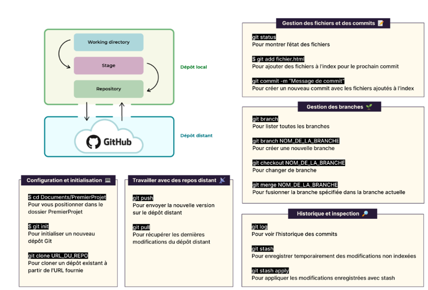
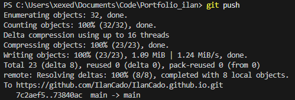

Informations
- Outils : Git, GitHub
- Objectif : Versionner, collaborer et publier des projets
- Date : Mai 2025
- Procédure : Voir la procédure (PDF)
Introduction
Git est un outil de gestion de versions distribué. Il permet de suivre l’historique des fichiers, travailler en branches, collaborer à plusieurs et récupérer des versions précédentes d’un projet. GitHub est une plateforme en ligne qui héberge des dépôts Git, facilite la collaboration et permet le suivi des projets via des outils tels que les issues, les pull requests, ou les actions.
Cas d'utilisation simple
git init: Initialise un dépôt localgit remote add origin <lien du dépôt>: Ajoute le lien vers le dépôt distantgit add .: Ajoute tous les fichiers modifiésgit commit -m "message": Crée un commit avec un messagegit branch -M main: Renomme la branche principale en maingit push -u origin main: Pousse le projet sur GitHub
Glossaire des commandes utiles
git clone URL: Clone un projet distantgit status: Affiche l’état des fichiersgit checkout -b feature: Crée une branchegit merge feature: Fusionne une branchegit log: Affiche l’historiquegit stash / git stash apply: Met de côté/restaure les modificationsgit revert / reset: Annule ou modifie les commitsgit remote -v: Liste les URL de dépôts distants